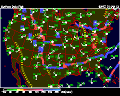

Daily/Monthly Plots Current surface map High Temperature Plot/ContourThis is a plot of the previous day's high temperature (F) from 12Z to 00Z. Low Temperature Plot/ContourThis is a plot of the previous day's low temperature (F) from 0Z to 12Z. 24 hour PrecipitationThis is a plot of 24 hour accumulated precipitation (in) up to 12Z. Current Month's PrecipitationThis is the total precipitation (in) for this month. Current Snow CoverThis is a plot of current snow cover (in). Sea Surface TemperatureThis is a contour plot of the latest global SST data (C). Sea Surface Temperature AnomaliesThis is a contour plot of the SST anomalies (C) Return to Surface Page Return to Unisys Main Page |